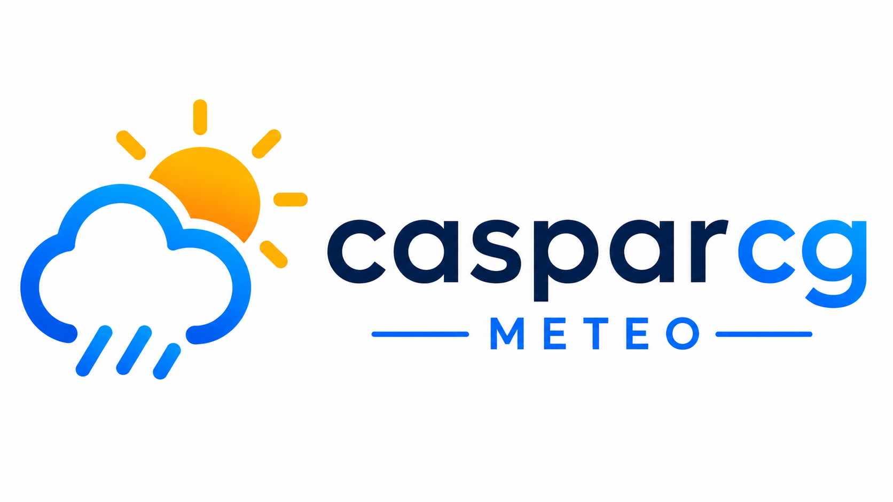

Application web de gestion de matériel développée pour une télévision locale.
Portfolio technique
Je développe des outils web et techniques pour simplifier les workflows, automatiser certaines tâches et créer des solutions adaptées à des besoins concrets. J’aime concevoir des outils simples, efficaces et pratiques pour améliorer l’organisation, la production et l’expérience utilisateur.
Application web de gestion de matériel développée pour une télévision locale.

Site Internet pour une télévision locale, avec gestion de contenu et intégration de flux vidéo.

Interface web de génération météo pour diffusion TV avec CasparCG.

Outil web de gestion du temps de parole pour prises de parole en émission.